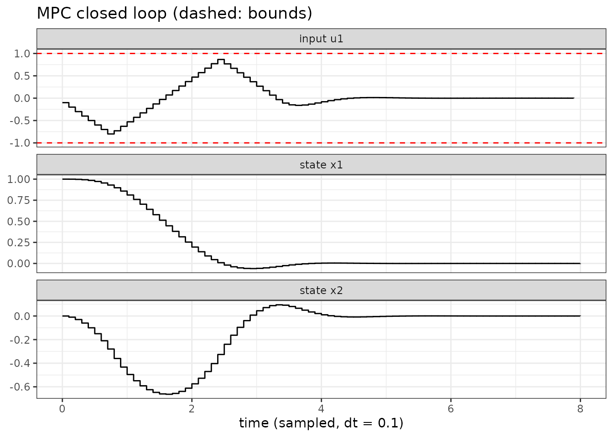
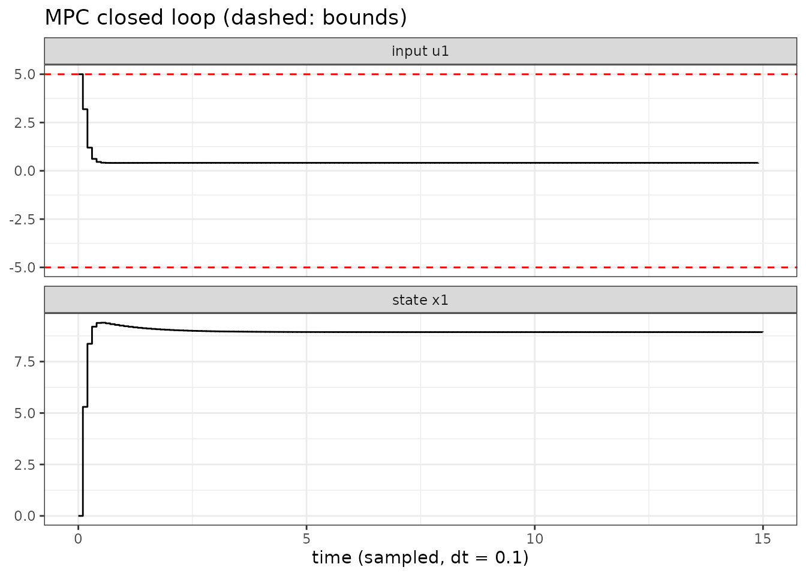
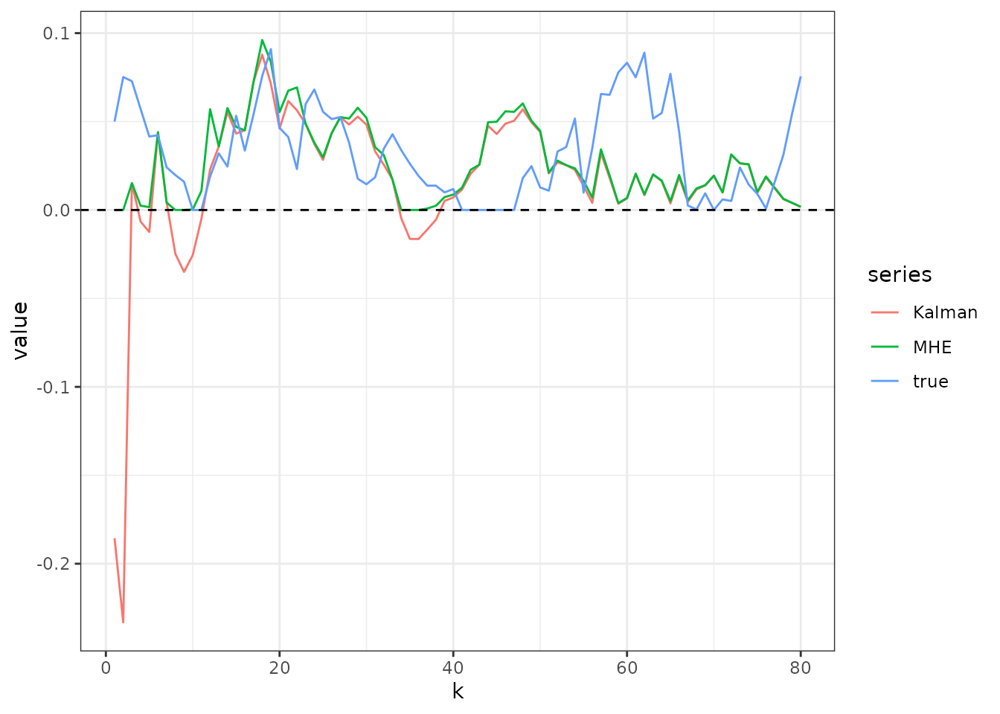

Input rate limits and move suppression
Actuators often limit how fast the input can change. Rate bounds act
on \Delta u_k = u_k - u_{k-1},
including the first move relative to the input applied at the previous
sample; the weight Rd penalizes moves:
plant <- ctrl_c2d(ctrl_ss(matrix(c(0, 1, 0, 0), 2, byrow = TRUE), c(0, 1),
c(1, 0)), 0.1)
mpc <- ctrl_mpc(plant, horizon = 25, Q = diag(c(10, 1)), R = 0.01, Rd = 1,
u_min = -1, u_max = 1, du_min = -0.1, du_max = 0.1)
sim <- ctrl_simulate_mpc(mpc, x0 = c(1, 0), steps = 80)
max(abs(diff(c(0, sim$u[, 1]))))
#> [1] 0.1
plot(sim)
Soft constraints
Soft state and output bounds add slack variables s \ge 0, x_{\min} - s \le x \le x_{\max} + s, with cost \rho_q s^2 + \rho_l s. With a large linear weight the penalty is exact: the slacks are zero whenever the hard problem is feasible. Input and rate bounds remain hard, because actuators cannot exceed them.
soft <- ctrl_mpc(plant, horizon = 5, Q = diag(2), R = 1, u_min = -0.1,
u_max = 0.1, x_min = c(-Inf, -0.05), x_max = c(Inf, 0.05),
soft = "states", soft_weight = c(1e3, 1e4))
st <- ctrl_mpc_step(soft, c(0, 1))
st$ok
#> [1] TRUE
max(st$slack)
#> [1] 0.94
sim_s <- ctrl_simulate_mpc(soft, c(0, 1), steps = 60)
summary(sim_s)
#> MPC simulation: 60 samples, 0 failed solves (0%)
#> solver statuses: solved = 60
#> solve time: mean 3.21e-05 s, max 4.78e-05 s; mean iterations 49.58
#> max input bound violation: 0
#> max state bound violation (true plant): 0.94
#> max slack: 0.94Offset-free tracking
With model mismatch or an unmeasured constant disturbance, MPC on a nominal model leaves a steady-state error. The standard remedy augments the model with a disturbance d_{k+1} = d_k, estimates it with a Kalman filter, computes the steady-state target (x_s, u_s) that cancels it, and tracks the target. With an observable augmented model and as many disturbances as measured outputs, the closed loop has zero offset for constant references and disturbances whenever it converges.
model <- ctrl_c2d(ctrl_tf(1, c(1, 1)), 0.1)
truth <- ctrl_c2d(ctrl_tf(1.4, c(1.2, 1)), 0.1) # gain and time constant wrong
mpc_o <- ctrl_mpc(model, 10, Q = 0, Qy = 1, R = 0.01, u_min = -5, u_max = 5)
est <- ctrl_mpc_estimator(mpc_o, "output", Qn = 1e-4, Qd = 1e-3, Rn = 1e-4)
plain <- ctrl_simulate_mpc(mpc_o, x0 = 0, steps = 150, plant = truth,
reference = list(y = 1, x = 1, u = 1),
disturbance = 0.3)
offset_free <- ctrl_simulate_mpc(mpc_o, x0 = 0, steps = 150, plant = truth,
reference = list(y = 1), estimator = est,
disturbance = 0.3)
c(plain = plain$y[150, 1], offset_free = offset_free$y[150, 1])
#> plain.y1 offset_free.y1
#> 1.261399 1.000000
plot(offset_free)
The plain controller settles at the wrong value; the offset-free
design reaches the setpoint despite the wrong model and the input
disturbance. type = "input" models the disturbance at the
plant input instead, which often gives better transients for input
disturbances.
Moving horizon estimation
Moving horizon estimation (MHE) estimates the state by solving, at every sample, a least-squares problem over a window of the last N measurements: \min \|x_s - \bar x_s\|^2_{P_s^{-1}} + \sum_{j=s}^{T-1} \|w_j\|^2_{Q_n^{-1}} + \sum_{j=s}^{T} \|y_j - C x_j - D u_j\|^2_{R_n^{-1}} subject to the model and to bounds on states and process noise. The first term, the arrival cost, summarizes the data before the window. Here the prior mean is propagated from the previous MHE estimate and the prior covariance follows the Kalman filter recursion. With no active constraints MHE then equals the Kalman filter exactly, which the tests verify.
MHE is not a Kalman filter: when states have physical bounds (a concentration cannot be negative), the bounds enter the estimate. The price is one QP per sample, growing with the window length.
set.seed(5)
sys <- ctrl_ss(0.95, 1, 1, dt = 1)
Tn <- 80
x <- 0.05
xs <- numeric(Tn)
y <- numeric(Tn)
for (k in 1:Tn) {
xs[k] <- x
y[k] <- x + rnorm(1, sd = 0.3)
x <- max(0, 0.95 * x + rnorm(1, sd = 0.02))
}
kf <- ctrl_kalman_filter(sys, y, Qn = 4e-4, Rn = 0.09, x0 = 0, P0 = 1)
mhe <- ctrl_mhe(sys, horizon = 10, Qn = 4e-4, Rn = 0.09, x0 = 0, P0 = 1, x_min = 0)
est <- ctrl_mhe_run(mhe, y)
c(kalman_min = min(kf$filtered), mhe_min = min(est$estimates))
#> kalman_min mhe_min
#> -2.331457e-01 -1.610433e-17
c(kalman_rmse = sqrt(mean((kf$filtered[, 1] - xs)^2)),
mhe_rmse = sqrt(mean((est$estimates[, 1] - xs)^2)))
#> kalman_rmse mhe_rmse
#> 0.05471087 0.03395546Each window’s QP starts from the previous solution shifted by one
sample, primal and dual (warm_start = TRUE, the default).
The estimates do not change; only the solver work does:
cold <- ctrl_mhe_run(mhe, y, warm_start = FALSE)
c(max_difference = max(abs(cold$estimates - est$estimates)),
iterations_cold = sum(cold$iterations), iterations_warm = sum(est$iterations))
#> max_difference iterations_cold iterations_warm
#> 0 5400 5625
df <- data.frame(k = rep(1:Tn, 3),
value = c(xs, kf$filtered[, 1], est$estimates[, 1]),
series = rep(c("true", "Kalman", "MHE"), each = Tn))
ggplot2::ggplot(df, ggplot2::aes(k, value, color = series)) +
ggplot2::geom_line() + ggplot2::geom_hline(yintercept = 0, linetype = "dashed") +
ggplot2::theme_bw()